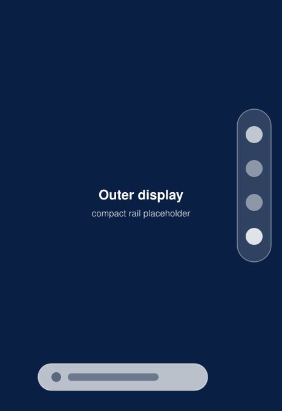
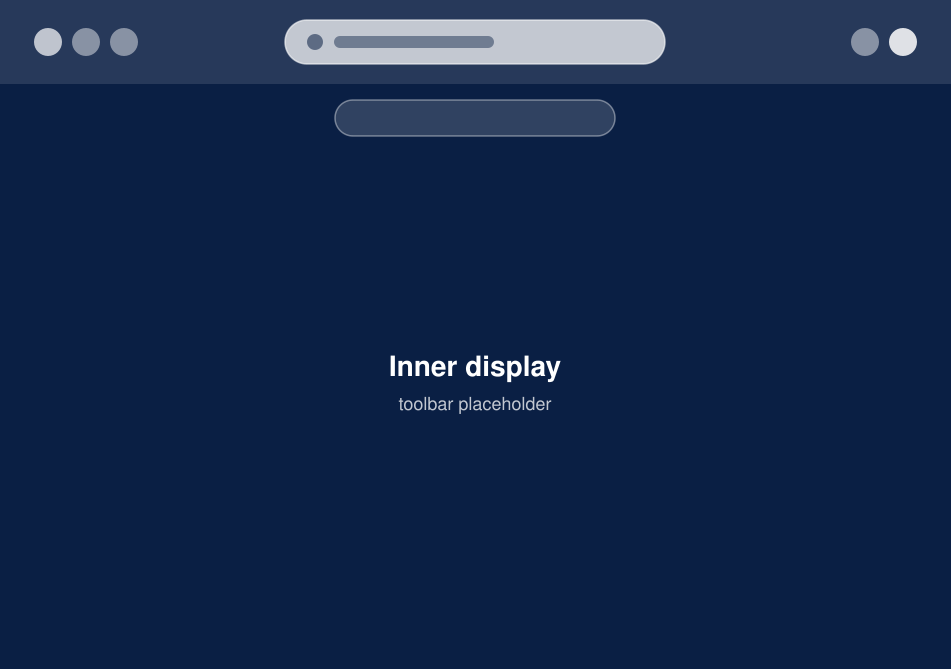

Transient chrome
Controls step aside while you read and return the moment you scroll back.
OuterView
Safari-faithful wall-to-wall browsing with transient liquid-glass chrome and dual-placement chrome across compact and regular widths.
Controls step aside while you read and return the moment you scroll back.
Bottom pill plus side rail on compact widths, top toolbar plus tab strip on regular widths.
One start surface for empty tabs and address editing with instant suggestions.
Reader themes, live find highlights with match counts, and per-site text zoom.
Group tabs by topic and switch to Private mode without saving history.
Bookmarks, history, and reading list with Safari import plus downloads with Files integration.


Your browsing data stays on your device inside SwiftData with zero tracking. For privacy questions, please ask via GitHub issues.